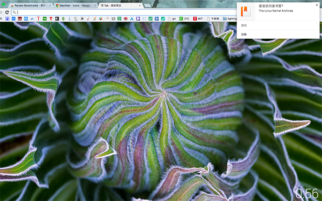

Welcome to Review Bookmarks Product Page.
Are you still worring about no time to sort bookmarks? Now you can try Review Bookmarks.
Review Bookmarks is a Chrome extension for you to review your bookmarks and sort your bookmarks. When you create a new tab, the extension will give you a tip from your bookmark bar. You can select to visit it or to delete it.
Using time confetti, you will review and sort your bookmarks ~
欢迎来到 温故知新 插件的产品页面
你还在为没有时间来整理你的书签栏而苦恼吗？快来试试 温故知新 吧。
温故知新 是一个可以帮助你重温或者整理书签的Chrome浏览器插件。每次当你新建立一个标签页面的时候，插件就会从你的书签栏选择一个书签并提示你。你可以选择浏览或者删除。
利用好你的碎片时间，你就能把你的书签栏管理妥当啦 ~
国内用户，如果无法访问Chrome应用商店，可以右键点击顶部的 Download .crx 按钮，
下载扩展安装包，然后进行 手动安装 即可。
如果你需要翻墙服务，可以访问这里。
Screen
